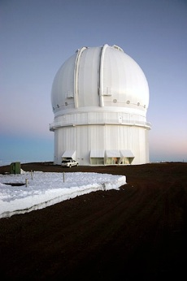
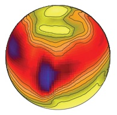
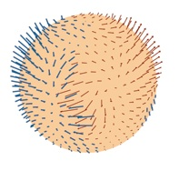

| Research | Publications | About Me |
Outreach |
Photography |
| Research |
|
I
am soon to complete my PhD at Queen's university, my project
focuses on observational studies of magnetic and abundance structure in
the atmospheres of A and B type stars. In particular I am performing
Magnetic Doppler Imaging of a sample of Ap/Bp stars using data acquired
with both the ESPaDOnS instrument at the Canada-France-Hawaii Telescope
(CFHT), and the new NARVAL instrument at the Pic du Midi observatory. I
work under the supervision of Gregg
Wade at RMC and
David Hanes at Queen's, with assistance from Oleg
Kochukhov working
at the Uppsala Astronomical observatory (Sweden)
- During the fall term of 2006 I was in tenure of an ESO Short-Term Studentship in Santiago, Chile. -
I frequently make research visits to Uppsala University in Sweden. |

|
|
My Research Interests: Magnetic Doppler Imaging of Ap Stars 

|
My
PhD project exploited the unique polarimetric capabilities of ESPaDOnS
(CFHT, Hawaii) and NARVAL (TBL, France) to obtain high signal-to-noise
ratio, high resolution, phase-resolved spectra of a selected sample of
magnetic Ap stars in all 4 Stokes parameters. The
resulting datasets are being used to construct detailed,
assumption-free maps of the vector magnetic fields and chemical
abundance structures in the photospheres of these stars using the
technique known as Magnetic Doppler Imaging (MDI). Such maps represent
a crucial step toward understanding the origin and evolution of
magnetic fields in upper-main sequence stars, and for constraining the
influence of these fields on the chemical separation and mixing
processes (e.g. diffusion, convection, mass loss) in Ap stars. Because different parts of the surface of a rotating star are moving with unequal velocities relative to the Earth, as a result of the Doppler effect spectral contributions of different surface regions are shifted in wavelength and surface structure is revealed spots revealed by distortions moving across line profiles as the star rotates. If we observe the star from all aspect angles, it becomes possible to construct a 2-D chemical or temperature map of the stellar surface. This technique combined with polarimetric data, allows the reconstruction of the vector magnetic map simultaneously and self-consistently with the distributions of chemical elements and temperature spots. |